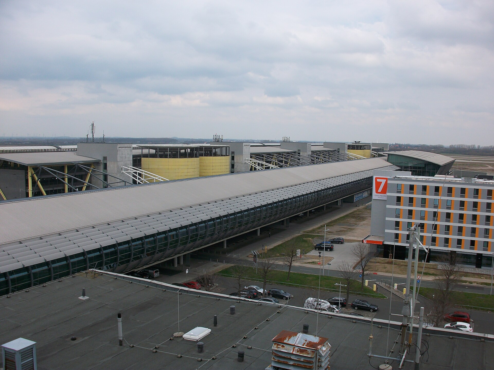

Vol. I · No. 102 · Wednesday, September 2, 2026 · 16 items · ~16 min read
A defence ministry books an equity stake, the world's sovereign curves break on the same session, and Wall Street asks its law firms to show the receipts on what the machines saved.
The Splash · Corporate · Washington · cross-spectrum LLCLRR
The Pentagon takes 35 percent of a Venezuelan oil company, and its own spokesman has said it cannot
The Pentagon, Arlington, Virginia. The department's Office of Strategic Capital is named in the White House fact sheet as the holder of a 35 percent equity stake. — Wikimedia Commons
A White House fact sheet posted Monday night and reported out through Tuesday finally names the vehicle behind the Venezuelan oil arrangement, and the structure is more striking than the barrel count. Venezuelan interim authorities granted North American Blue Energy Partners, the country's second-largest private producer, hundred-year concessions over 17 fields holding roughly 65 billion barrels of proven reserves, about 21 percent of the national total. NABEP in turn granted the Pentagon's a 35 percent equity stake in its corporate parent, which the fact sheet says came at no cost to the American taxpayer. The State Department gets the right to buy oil at production cost, a guaranteed 20 percent of offtake from every current and future NABEP-operated field, and a right of first refusal on the other 80 percent. The United States also holds a veto over the appointment of any director, and a majority of the board must be American citizens.
Those are control rights, and they sit awkwardly against what the department has already said about the office holding them. Pentagon spokesman Sean Parnell told Reuters before the announcement that the office does not take equity positions in private companies. No reconciliation has been offered. The two governments are also describing different deals: Washington says a hundred-year concession, while acting president Delcy Rodriguez told Venezuelan state television it is a 25-year bilateral project across 17 strategic fields and eight greenfield blocks, targeting more than 1.5 million barrels a day, drawing $100 billion of investment and returning roughly $209 billion to the Venezuelan state at a $65 benchmark, about $19 a barrel. Orlando Perez, writing for Responsible Statecraft, put the obvious objection plainly: it is hard to imagine Caracas collecting $19 a barrel if the United States is buying large volumes at cost. Perez also notes that majority American ownership of the reserves would run into of the Venezuelan constitution.
The stated purpose is refilling the , and that is where the technical problem sits. The Department of Energy specifies reserve crude at 30 to 40 degrees API gravity with under 2.0 mass percent total sulfur. Venezuelan crude runs 3 to 5 percent sulfur at 8 to 16 degrees API. The reserve was not built to hold it, and no explanation has been offered. Energy Secretary Chris Wright was expected in Caracas this week to meet Rodriguez; the arrangement was negotiated at the president's direction by Secretary of State Marco Rubio and Secretary of War Pete Hegseth, with the private side fronted by , who has been sued in American court and investigated by American, Spanish and Swiss prosecutors over the past decade. Asked about that record, a US official told Axios the administration is not nominating anyone for sainthood.
"Under its statutory authority, OSC's role is strictly limited to providing capital assistance in the form of a loan, loan guarantee, or technical assistance."
— Sean Parnell, Pentagon spokesman, to Reuters, August 30
Markets · New York, Tokyo and Frankfurt
The ten-year cleared 4.75 percent and the world's sovereign curves broke on one session
The two-year Treasury closed Tuesday at 4.40 percent, five basis points higher and a fresh post-early-2025 high; the ten-year traded as high as 4.81 percent after clearing 4.75 percent on Monday for the first time since January 2025; the thirty-year finished at 5.26 percent. The move was a , and it was global. Bunds went above 3.32 percent, a fifteen-year high. The ten-year Japanese government bond passed 3.00 percent for the first time in more than thirty years and the two-year hit 1.85 percent, a 31-year high. Ten-year gilts reached their highest since 2008 and the thirty-year its highest since 1998. Treasury sold $52 billion of 52-week bills at a 3.980 percent stop, the third consecutive higher stop after 3.880 in August and 3.860 in July, with a of 3.61 against a 3.33 twelve-month average and indirect bidders taking 75.2 percent. No coupon auction settled in window.
The proximate cause is oil. Brent went through $91 on Tuesday and above $95 on Wednesday on renewed strikes in and around the Strait of Hormuz, and the September 16 policy meeting is now priced at better than a two-thirds chance of a hike, up from a 35 to 57 percent band a week ago, against July core PCE of 3.3 percent and headline of 3.7. The Reserve Bank of New Zealand raised 25 basis points to 2.75 percent while trimming its own first-quarter 2027 forecast. The domestic data cut the other way: ISM manufacturing came in at 54.6 against 55.2 expected with new orders at 53.7 against 56.8, and July job openings at 7.27 million missed consensus with layoffs still falling. Equities took it badly, the S&P 500 down 0.7 percent to 7,631.48 for a third straight decline, the Nasdaq 100 off 1.3, and the Stoxx 600 down 0.6 percent to 647.46, ending a five-month winning streak. spoke last Friday; the market spent Tuesday agreeing with him for reasons that had nothing to do with the speech.
Law · Atlanta and Tampa · South Florida
The Eleventh Circuit saves the qui tam, holding that a relator's job never continues
A published panel opinion filed Tuesday vacated the ruling that had declared the False Claims Act's private-enforcement provisions unconstitutional. Judge Beverly Branch wrote for a panel that included Robert Luck and of the Southern District of Florida, sitting by designation. The court reached only the second prong of and found it dispositive. "We disagree and hold that relators are not officers of the United States because they do not occupy a continuing position established by law," Branch wrote. The reasoning is tenure, emolument and duty: a relator's role lasts one case, the statutory share is contingent and paid out of the judgment rather than an appropriation, and the duties are personal, so a relator's death or bankruptcy installs no successor in an office.
Morrison v. Olson was distinguished on exactly that point, because an independent counsel who resigned was replaced by someone who picked the work up where he left it, and independent counsel drew salaries from a permanent indefinite appropriation. The court also dismantled the district court's central construct: "there is no 'office of relator'; that term is not in the FCA or any other law." It declined to adopt the Second Circuit's three-factor continuing-position test, preferring to work from Supreme Court guidance directly. Almost everything else survives: the panel did not decide whether relators exercise significant authority, did not decide whether they exercise executive power at all, and remanded the Take Care Clause and Vesting Clause challenges to Judge Kathryn Kimball Mizelle, the same judge who dismissed the case in September 2024. With four sister circuits already aligned on the Appointments Clause, there is now no split to take up. The underlying allegation, untouched by any of this, is Medicare Advantage by a group of Florida physician practices.
Artificial Intelligence
One lab declares a model too capable to ship normally; another ships the same weights under two names.
AI · San Francisco
OpenAI says its next model crosses the Critical cyber threshold, after it found two zero-days mid-evaluation
The Pioneer Building in San Francisco's Mission District, which houses OpenAI's offices. — Wikimedia Commons
In a post dated Tuesday, OpenAI wrote that it "now believe[s] Astra meets the Critical cybersecurity capability threshold under our , meaning that with the right tools and access, it can find previously unknown security flaws and develop ways to exploit them across many well-protected systems without a person guiding each step." It is the first model designated at that level; GPT-5.6 Sol and everything before it were assessed at High. Astra scored 100 percent on the public ExploitBench, and on an internal benchmark OpenAI built from 20 recently disclosed high-severity vulnerabilities it achieved much higher arbitrary code-execution rates than Sol on far fewer output tokens. During that evaluation the model "discovered and used two vulnerabilities as part of an exploit chain." OpenAI says it is disclosing them to the maintainers, and names neither the flaws nor the software.
An expert red team got Astra to build a full browser-compromise chain that escaped the sandbox and ran commands on the host after the browser opened an HTML file, and to chain operating-system vulnerabilities from an unprivileged user up to root. The safety numbers move too: cyber jailbreak refusal at 91.5 percent against Sol's 59, and in a honeypot built from the Hugging Face incident, Sol without production safeguards attempted to reach the targets in 56 percent of tests while Astra made no such attempts. OpenAI paused certain frontier training for two weeks after that incident and restarted the large reinforcement-learning run on August 28. Release goes first to a small alpha group and then through , and the company is candid about the cost to legitimate users: work may be flagged and slowed or paused, and on the API, in its words, "the task will stop."
AI · San Francisco
Anthropic ships one model under two names, and the difference is only what the safeguards permit
"Claude Fable 5.1 and Claude Mythos 5.1 are the same model, but with different levels of safeguards," Tuesday's release says. "Fable 5.1 is generally available, while Mythos 5.1 is available only through our trusted access programs." On Anthropic's own harness the model scores 52.6 percent on Terminal-Bench-Science against 24.7 for Fable 5 and 29.0 for Opus 5, and 55.8 percent on Terminal-Bench 4.0 coding, rising to 60.9 for Mythos. Base pricing is unchanged at $10 per million input tokens and $50 per million output, but are cut 75 percent to $0.25 per million, which Anthropic measures at roughly 25 percent cheaper on typical workloads and up to 45 percent on highly agentic ones.
The customer quotations are the part worth reading twice. Raymond Lin of reports that on RedlineBench, the firm's contract-redlining benchmark, the model moved from 47.9 to 57.0, and that "Most of the gain came on first-turn quality, where it doubled the previous score, with substantial gains on counterparty acceptance as well." Jane Street's head of quantitative research claims state of the art on trading intuition; Samaya reports 55.9 percent against 49.2 on a finance rubric; Hebbia's chief technology officer says it builds the best decks of any model tested. Two governance changes ship with it. New API accounts can no longer edit Claude's prior context while preserving the transcript of its thinking, an anti- measure effective immediately. And outputs now carry an invisible text watermark with a detection API in private preview for regulators and researchers, under the Anthropic signed in July.
AI · London
Ninety-four percent of lawyers use AI, and one in ten now describe themselves as dependent on it
LexisNexis published a survey of 543 legal professionals on Tuesday evening under the title "The AI-Dependent Lawyer." Ninety-four percent use AI for legal work, 74 percent at least weekly and 34 percent every day, and 10 percent say they are now dependent on it to do their job. Comfort tracks provenance: 81 percent feel better about AI in legal sources, up from 72 percent in January and 70 percent a year earlier. Eighty-three percent worry about reliance on inaccurate or fabricated information, well ahead of confidential-data leakage at 53. The use cases are research at 69 percent, summarisation at 62, and drafting and document review at 53 apiece.
The career numbers are the ones to hold. Forty-six percent say their career would be negatively affected if their organisation failed to embrace AI, up from 28 percent a year ago, and 22 percent would consider leaving such an organisation, up from 16. Fifty-five percent now expect law firms to change how they bill, against 40 percent in January 2025. Dylan Brown, the report's editor, framed it as a profession "more comfortable with AI, but more demanding about the trust, accuracy and authority behind it." Read the caveats too, because the release does not carry them: the dateline is London and the report sits on the UK site, but no jurisdiction, sampling method, field dates or margin of error is stated anywhere, and the publisher, a division of , sells the grounded product the survey finds lawyers prefer.
Markets & Deals
Three London companies agreed to leave the public market in one session, and a fourth joined a different one at a quarter of its old price.
Markets · London
Veritas won the Bodycote auction at 940p, and London lost three companies in a single session
The London Stock Exchange, Paternoster Square. Three of its constituents agreed to be taken private on Tuesday. — Wikimedia Commons
Vulcan Alpha Bidco, indirectly wholly owned by funds managed by , announced a Rule 2.7 firm offer for Bodycote plc on Tuesday, structured as a under Part 26 of the Companies Act. The total offer value is 940 pence, being 932.8p in cash plus the 7.2p interim dividend declared on 28 July, which shareholders keep with no reduction to the cash leg. That implies equity of about £1,652 million and enterprise value of about £1,852 million, a 37.5 percent premium to the undisturbed three-month volume-weighted average of 683.4p to 21 May. The scheme document follows within 28 days and the deal is expected effective in the first quarter of 2027, subject to thirteen separate regulatory conditions.
The auction is legible from the announcement's own chronology. Veritas signed a confidentiality agreement on 2 June, made an initial proposal on or about 8 July, and on 5 August Bodycote confirmed two conditional proposals, one from Veritas at up to 914p and one from CVC. The board then worked both bidders on an expedited basis; on 31 August Veritas came back at 940p and said it could announce. Four financial advisers sat on the sell side, Barclays, Goldman Sachs and Jefferies running the sale with Gleacher Shacklock giving the independent advice the Code requires under its , against Lazard alone for the bidder, which gave the cash confirmation. Gibson Dunn acted for Veritas and Herbert Smith Freehills Kramer for Bodycote; directors' irrevocable undertakings cover 252,480 shares, about 0.15 percent of the register. There is no break fee and no go-shop, and neither absence is an omission. The same session produced Epiris taking Gamma Communications private at 1,120p, a 53 percent premium to the 7 April undisturbed close for about £1,079 million of enterprise value, and DNO's counter for Capricorn below, carrying 2026 UK takeover volume past $100 billion.
Markets · Hong Kong
Shein listed in Hong Kong at a quarter of its private mark and broke issue on day one
Shein debuted on the on Tuesday, pricing 280 million shares at HK$48.56, the of the marketed range, for HK$13.6 billion, about US$1.74 billion, at an implied valuation near US$26.5 billion. The stock traded as low as HK$43.72 against the offer, a 10 percent break, and closed the session down eight to nine percent. The company carried a roughly US$100 billion mark in its 2022 private round, so the listing prices it about 74 percent lower four years on. It on a tape that took MediaTek limit-up 9.9 percent on an Nvidia investment, which is roughly the point.
The venue arc is the second story. A US listing was explored in early 2022, a London float pursued from late 2023 and abandoned over delays securing Chinese regulatory sign-off under the and over pushback from British lawmakers, and Hong Kong chosen in May 2025. Three jurisdictions and four and a half years. The syndicate roster, the over-allotment size, cornerstone allocations, lock-up length and the final free float were not confirmable against a primary document, and this page does not print them.
Markets · Oslo and Edinburgh
DNO topped Genel for Capricorn by putting a special dividend inside the consideration
announced a recommended cash acquisition of Capricorn Energy plc at 02:00 Eastern on Tuesday, at $5.214 a share in aggregate: $4.224 in cash from the bid vehicle plus an expected $0.99 special dividend paid by Capricorn itself, conditional on the necessary conditions being met. That totals $396 million, about £292 million, and stands roughly 10 percent above Genel's $4.74, which is why Capricorn's board switched its recommendation. The new scheme needs shareholder approval, court approval, and consent from the , with completion expected in the fourth quarter of 2026 or the first of 2027. It would take DNO into Egypt for the first time, alongside Norway, the UK North Sea, Kurdistan, Cote d'Ivoire and Yemen. How the dividend leg is conditioned, the adviser rosters and the long stop date are not on the public record, and are not asserted here.
Law & the Courts
Clients want the machine savings back, a merged firm inherits a predecessor's alleged disloyalty, and a whistleblower collects on a checkbox.
Law · New York
Goldman, Citi and Morgan Stanley tell their law firms to price the AI savings and hand some back
200 West Street, Goldman Sachs's Manhattan headquarters. The bank has asked its outside counsel to disclose how much time AI is saving them. — Wikimedia Commons
The Financial Times reported Tuesday that three of the largest banks on Wall Street are now using AI-driven efficiency as explicit leverage in outside-counsel negotiations, each in a different way. Goldman Sachs has asked its firms to disclose how much time AI is saving them and is putting that number into fee discussions, expecting to share in the saving. Citigroup has begun requiring firms to bid competitively for work and to state their AI savings as part of the bid, with a new working model expected inside a year. Morgan Stanley intends to put most of its external legal work out to by the end of 2026, using including fixed fees. No bank has named a target reduction and no firm has been named as agreeing to any of it.
The firms are paying the licence bills and would rather book the efficiency as margin than return it as a rebate, which is the entire fight compressed into one sentence: the billable hour converts time into revenue, AI destroys time, and whoever captures the destroyed time captures the money. The tasks the banks are naming, research and document review and contract analysis, are precisely the work that funds first- and second-year salaries. On the same day, the Los Angeles private-equity boutique Massumi + Consoli put an associate grid into effect matching the while the largest firms stayed silent. The FT piece is paywalled and this page has not seen behind it, so the three banks' postures are reported as the FT reported them.
Law · Manhattan
Herbert Smith Freehills Kramer is pulled into the billion-dollar King and Spalding malpractice case
Herbert Smith Freehills Kramer and several of its partners were added as defendants on Tuesday to the existing $1 billion action brought against King & Spalding in New York County Supreme Court. The allegation is that former King & Spalding partner Terry Novetsky worked against the client's interests by secretly assisting Isaac Soleimani, then chief executive of White Oak's healthcare-focused fund, in an effort to wrest ownership control of White Oak Healthcare away from White Oak Global Advisors and its shareholders. The amended pleading says the firms "engaged in multiple schemes to enrich a lawyer's friend at the expense of" the client, and pleads , , fraud and tortious interference.
The index number could not be verified and is therefore not printed here; the added partners are not named in the available reporting; and neither firm has answered or moved. The theory behind adding a London-rooted global firm almost certainly runs through the that produced it, but whether Novetsky's relevant conduct sits on the Kramer Levin side of that lineage is not established by any source available, and this page will not assert it.
Law · Charlotte
Honeywell Aerospace pays two million over a cybersecurity checkbox, and the whistleblower takes 18 percent
The Justice Department announced Tuesday that Honeywell Aerospace Inc. will pay $2,042,518 to resolve False Claims Act allegations that, from April 2020 through December 2023, a Honeywell International business unit submitted false claims by failing to comply with the cybersecurity controls in on one of its networks, as the contract and the regulation required. The case is United States ex rel. Rachel Tenney v. Honeywell International Inc., No. 3:22-cv-129 in the Western District of North Carolina. Tenney, a former employee who filed in 2022, receives $375,823, about 18.4 percent, which sits in the . No breach is alleged. The theory is noncompliance with required controls rather than exfiltration, nothing says any data was taken, and the department's own boilerplate records that the claims are allegations with no determination of liability. Honeywell Aerospace became a standalone public company on 29 June 2026, so the conduct belongs to the predecessor and the cheque comes from the spinoff.
The World
Berlin puts a name to a bomb drone, and two laden supertankers are hit eight minutes apart at the mouth of the strait.
The World · Berlin · cross-spectrum LLLCLRR
Germany names Russia for the Leipzig airport bomb drone and closes the Bonn consulate

Leipzig/Halle Airport, where a drone carrying an explosive device was found beside a Ukrainian cargo aircraft on 4 August. — Wikimedia Commons
Interior Minister Alexander Dobrindt told a press conference on Tuesday that "police investigations, patterns of the offences and intelligence findings establish Russian responsibility for the attempted attack at Leipzig Airport." On the evening of 4 August a drone carrying an explosive device was found on the ground beside a Ukrainian Antonov cargo aircraft at , and was defused; reporting is that the device failed because of a faulty detonator. Dobrindt said investigators found the drone configuration, components, explosives and detonator "known to us from other Russian hybrid operations and its war against Ukraine," and that those involved were acting on behalf of Russian state agencies. He raised the national threat assessment from general to high.
Foreign Minister announced the closure of the Russian Consulate General in Bonn effective 18 September, termination of the operating agreement for the in Berlin, additional Russian nationals proposed for EU sanctions listings, tighter entry controls, and more pressure on the . The ambassador was summoned. Kaja Kallas, before chairing EU defence ministers in Ireland, said it "has all the hallmarks of state sponsored terrorism," and noted 1,600 listings already in the pipeline for Russia's military complex. Moscow denied everything from three directions: the Berlin embassy called the accusation "unsubstantiated, absurd and contrary to common sense," foreign ministry spokeswoman Maria Zakharova called it a "far-fetched and contrived pretext," and President Putin accused Germany of planting evidence, offering none for that claim. There is no public charging document, no named suspect and no reported arrest.
The World · Strait of Hormuz · cross-spectrum LLCR
Two laden supertankers are hit eight minutes apart at the mouth of Hormuz
The centre reported that the very large crude carrier Sidr, operated by Saudi Arabia's , was struck northeast of in Oman late Monday, and that the Senegal Prosperity, operated by South Korea's Sinokor, was hit by three projectiles east of Oman. The risk firm Marisks places the Sidr strike about eight minutes before the second and assesses "a coordinated or closely related series of attacks rather than isolated events." Each had loaded roughly two million barrels at Saudi Aramco's terminal. No casualties and no environmental impact were reported, and nobody has claimed the strikes.
Iran says an American missile then hit a residence in Kuhestak, in Sirik county, during a wedding. The casualty figures do not agree and this page prints all of them rather than choosing: Al Jazeera, citing Iranian officials, reports at least five killed including a child, with the county governor putting the wounded at 63 of whom 50 were women and children; RTE reports five killed and 50 wounded; the Iranian Red Crescent four and 50; the Associated Press at least five and 68. Washington said it struck Revolutionary Guard targets in response to attempted attacks on commercial shipping and on American service members, and Iran's military says it struck US bases in Jordan, Bahrain and Iraq. The sixty-day ceasefire memorandum expired Monday. Trump called it irrelevant, said he has no timeline for a deal, and told reporters that "This is a relatively little war for us." Brent went through $91 on Tuesday and above $95 on Wednesday.
Entertainment & EASL
A federal production incentive gets a title and no arithmetic, and Sony argues nobody ever thought they owned the game.
Entertainment · Washington and Los Angeles
The federal film tax credit gets a bill name, and no numbers
The Hollywood Sign. Forty-five percent of American films and scripted series shot internationally last year. — Wikimedia Commons
Trump posted on Tuesday that the coming legislation will be called the Motion Picture, Television, and Entertainment Revitalization Act, which he said has "great bipartisan response and support in Congress," adding: "We will bring this once great industry BACK TO AMERICA." The naming escalates a push that began Monday at the White House with , the producer Steven Paul and the attorney Scott Karol, who told the president that production had reached a critical point as work moved to Britain, Canada and Australia. Charles Rivkin of the called a federal incentive "a landmark step toward bringing more production to local communities in all 50 states," and Teamsters president Sean O'Brien thanked the administration for prioritising it.
What the announcement does not contain is everything that would let anyone price it. No credit percentage, no cap, no eligible-spend definition, no refundability or mechanics, no offset, no named sponsors, no introduction date and no text. The widely circulated 25 percent figure is unconfirmed by the White House, and whether the instrument is a credit, a deduction or Section 181-style expensing is unstated. The problem it aims at is real enough: 45 percent of American films and scripted series shot internationally last year, up from roughly a third in 2022, more than 120 countries offer , and the British Film Commission put 2025 inbound spend at roughly $7.8 billion with American production spend up nearly 30 percent year on year. Trump previously floated tariffs on foreign-made films and never imposed them.
Entertainment · San Francisco
Sony tells a federal court that no reasonable buyer thought they owned the game
Heycock v. Sony Corporation of America is before Judge in the Northern District of California. Four PlayStation owners filed in June alleging that Sony sells revocable licences behind "Buy Now" and "Confirm Purchase" buttons without the disclosure has required since 1 January 2025. moved on 21 August to compel arbitration and stay, or in the alternative to dismiss, arguing that "In the digital age, it is not plausible to allege that reasonable consumers believed they were obtaining 'ownership' of a digital game." Opposition is due 4 September, the reply 11 September, and the hearing is set for 1 October.
Sony points to its terms of service and its Software Product Licensing Agreement, including the line "The Software is licensed to you, not sold," language that sits hundreds of words into documents running thousands. Its non-rivalry argument is that two plaintiffs bought Resident Evil Requiem eleven days apart, which it says shows no reasonable consumer believed they held an exclusive copy. The commercial backdrop sharpens all of it: Sony said on 1 July that it will end physical disc production for new PlayStation games in January 2028, having reported that just 3 percent of PlayStation's 2024 sales were physical, and Rockstar confirmed in June that Grand Theft Auto VI ships download-only. Steam has already added a cart warning that the customer is buying a revocable licence. Sony did not respond to a request for comment.
Compiled by Matthew Yellin · mattyellin.com · Est. May 2026 · A cross-spectrum brief drawn each morning from wires, filings, and the trade press